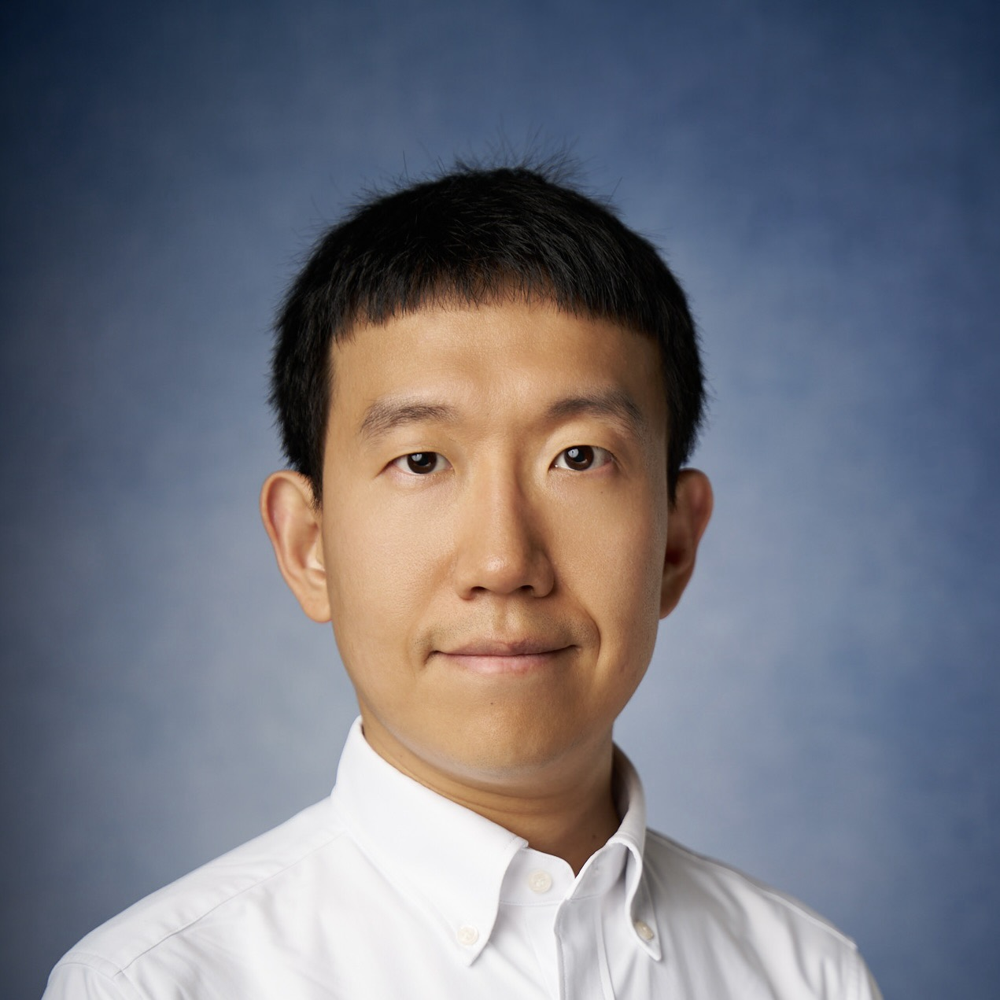

Hao Yu
Postdoctoral Research Associate
Notre Dame Radiation Laboratory, University of Notre Dame
Contact: hyu5@nd.edu

I study how radiation, low-energy electrons, and plasma change DNA and polymers. My work combines chemical assays with X-ray photoelectron spectroscopy to examine damage in molecules and at material surfaces.
Research
DNA damage and chemical protection
My work uses aqueous plasmid DNA to examine damage and the effects of chemical additives.
Plasmid DNA method Amino-acid effects Rutin radical chemistry
Electron-induced surface chemistry
I use X-ray photoelectron spectroscopy to examine changes in chemical bonding and surface composition following low-energy electron irradiation.
PTFE decomposition
My work examines changes in thermal stability and decomposition products under different irradiation and heating conditions.
Nickel catalyst Irradiation temperature High-dose irradiation